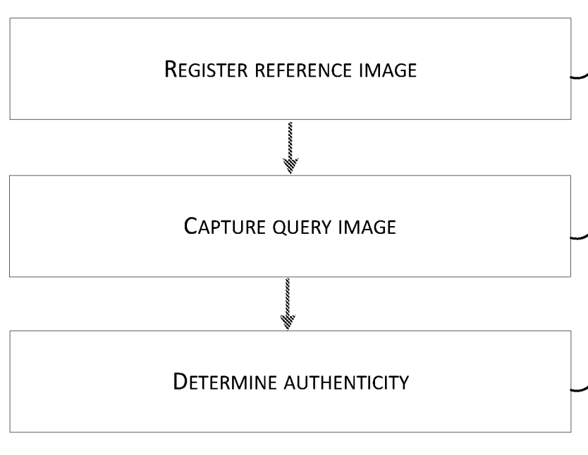
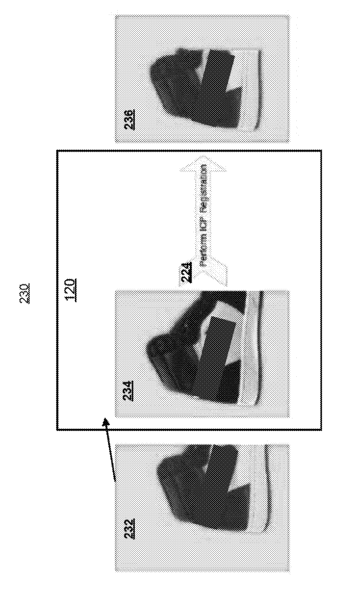

|
I am currently working as a Research Assistant in MANAS Lab, IIT Mandi in Prof Aditya Nigam's group, where I am working on gallbladder cancer (GBC) detection (in collaboration with Prof. Chetan Arora, IIT Delhi and Prof. Dr. Pankaj Gupta, SGPGI Chandigarh). I also work as a Senior Machine Learning Engineer at Entrupy, where I work with the India-ML team to develop solutions for finerprinting and authenticating luxury/high-value goods. Prior to this, I worked as a Technological Account Manager at G7 CR Technologies. I completed my Bachelor of Technology in Computer Science and Engineering (CSE) from Indian Institute of Technology Dharwad. I have had the opportunity to work with Prof Aditya Nigam in the summer of 2019. I have also collaborated with Mr. Vitobha Munigala of IBM Research Labs, Benagaluru under IBM's Global Remote Mentorship Programme. I want to improve healthcare by making computers see, talk and act. If you have any questions / want to collaborate / discuss new ideas, feel free to send me an email! |
|
|
|
|

|
Aman Jaiswal, Suraj Kumar, Aditya Nigam IJCNN, 2020 paper / presentation We propose an Enhanced-VStegNET for full-video steganography, that outperforms the current SOTA VStegNET both quantitavily and qualitatively by modifying the architectures of the hiding and revealing networks that helps encode information more covertly and decode information more reliably. |
|
|
|
|  |
Hemanth Sangappa, Aman Jaiswal, Akhilesh Yadav, Pratik Likhar, Ashlesh Sharma Patent Application No. - WO 2023114435A1 (Published) Various embodiments of an apparatus, methods, systems and computer program products described herein are directed to a Fingerprint Engine that registers a reference image portraying a physical instance of an object. The Fingerprint Engine captures a query image portraying a physical instance of a target object. The Fingerprint Engine compares the reference image and the query image. The Fingerprint Engine determines an authenticity of the target object based on detecting a match between the reference image and the query image. |
|  |
Hemanth Sangappa, Aman Jaiswal, Rohan Sheelvant, Ashlesh Sharma Patent Application No. - US 11430152B1 (Granted)
Various embodiments are directed to a Pose Correction
Engine ( “ Engine ” ) . The Engine generates a reference image of the object of
interest . The reference image portrays the
object of interest oriented according to a first pose . The
Engine receives a source image of an instance of the object . The source image
portrays the instance of the object oriented
according to a variation of the first pose . The Engine determines a difference
between the first pose of the refer
ence image and the variation of the first pose of the source image . The Engine
identifies , based on the determined
difference , one or portions of a three - dimensional ( 3D ) map of a shape of
the
object obscured by the variation of the first
pose portrayed in the source image . The Engine generates a
pose corrected image of the instance of the object that
portrays at least a portion of the source image and at least the
identified portion of the 3D map of the shape of the object.
|
|
|
|
I borrowed this template from Jon Barron's website. |